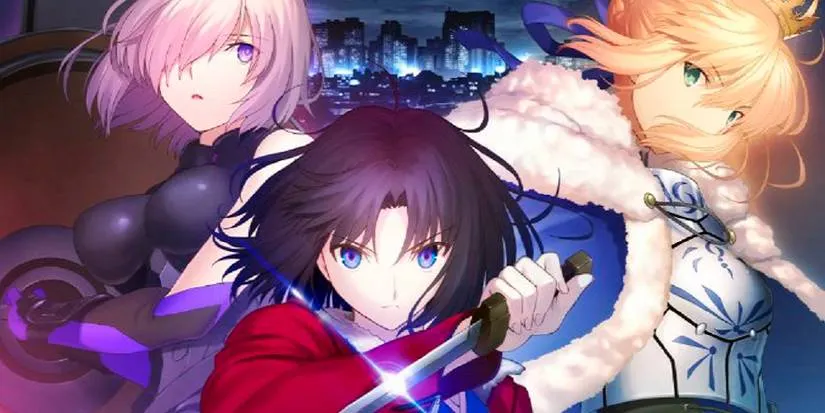
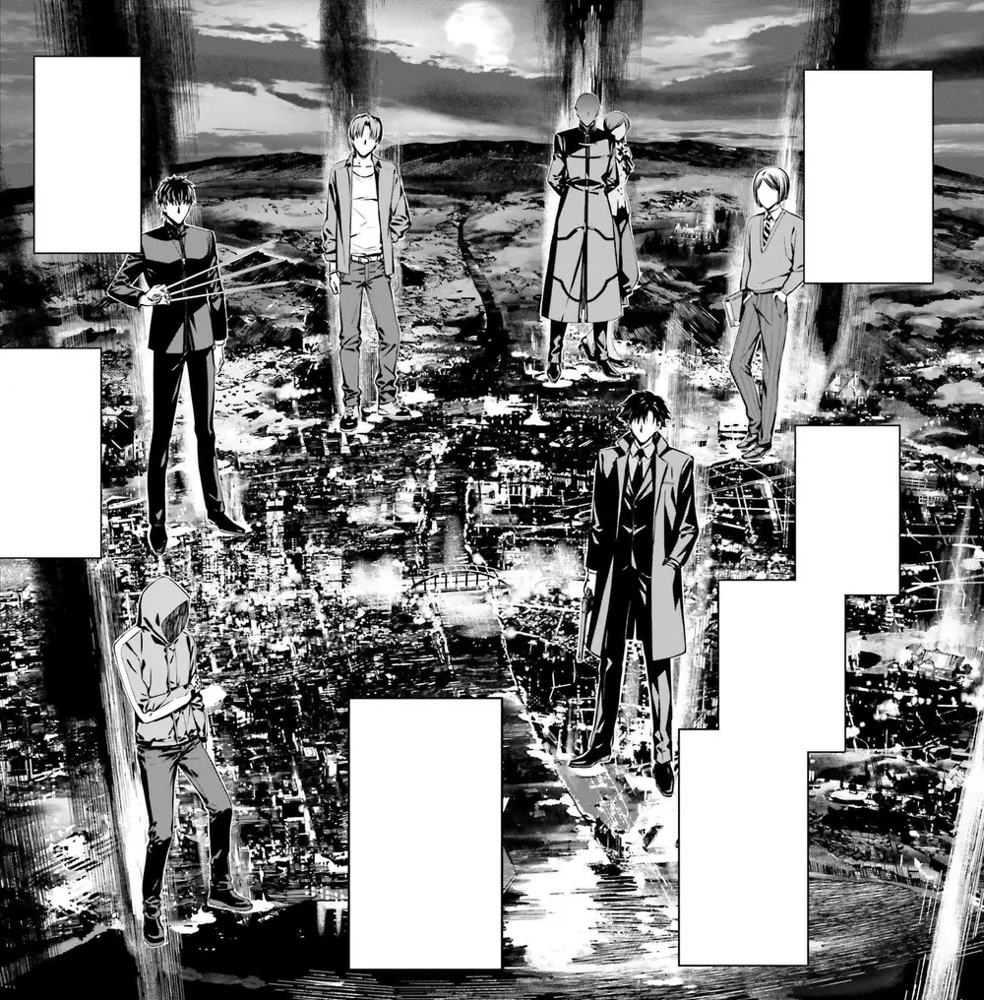
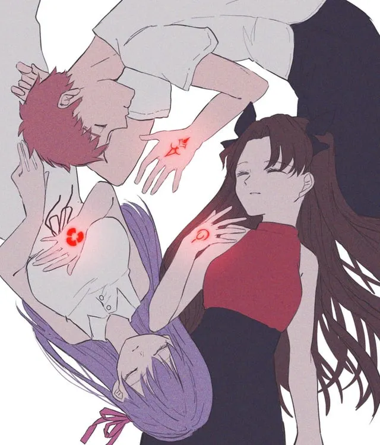
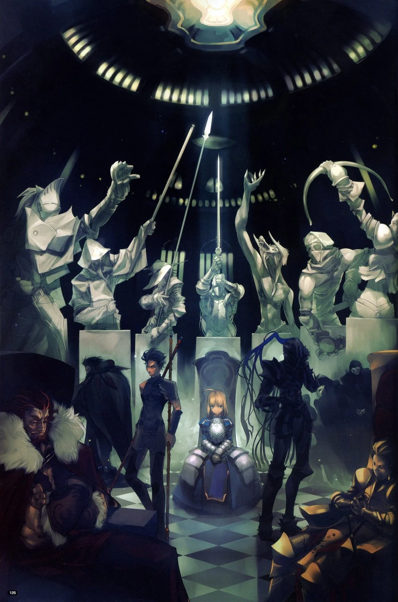
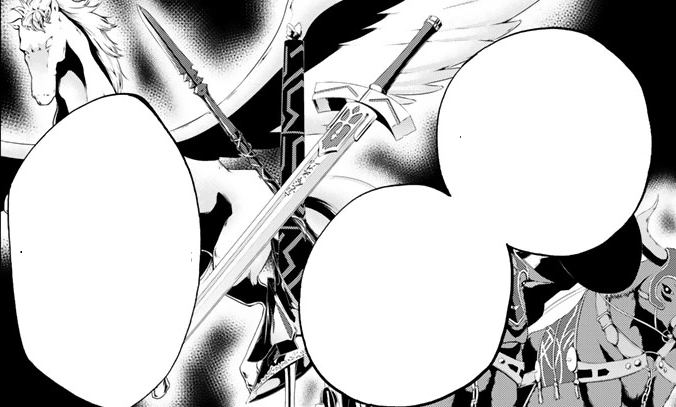
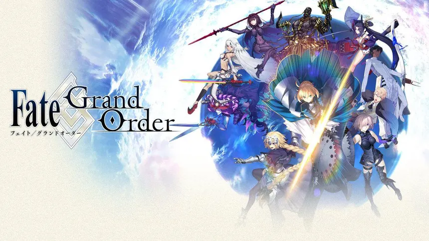

El Universo de la Saga Fate
Origen del Universo Fate

El universo Fate es una de las principales ramas del multiverso creado por
TYPE-MOON, la compañía japonesa fundada por Kinoko Nasu y Takashi Takeuchi.
Este universo combina elementos de magia moderna, mitología, historia y
ciencia ficción, dando lugar a un mundo donde los mitos del pasado aún
influyen en el presente.
Fate se desarrolla dentro del llamado Nasuverso, un conjunto
de mundos paralelos donde las reglas de la magia, el tiempo y la realidad
pueden variar según la línea temporal.
La Guerra del Santo Grial

La Guerra del Santo Grial es el eje central de la mayoría de historias de Fate.
Se trata de un ritual mágico creado por las familias Einzbern, Tohsaka y Matou,
cuyo objetivo original era alcanzar la Raíz de Akasha, la fuente de todo
conocimiento y existencia.
En cada guerra, siete magos conocidos como Masters invocan
a siete Servants y luchan hasta que solo una pareja quede en pie.
El ganador obtiene el Santo Grial, un objeto capaz de conceder deseos,
aunque a menudo está corrompido o incompleto.
Masters y el Sistema de Comandos

Los Masters son magos que participan en la Guerra del Santo Grial.
Su función es suministrar energía mágica a los Servants y dirigirlos
mediante los Sellos de Comando, marcas místicas que permiten emitir
órdenes absolutas.
La relación entre Master y Servant varía enormemente según la personalidad
de ambos, siendo uno de los aspectos narrativos más importantes de la saga.
Clases de Servants

Los Servants son espíritus heroicos registrados en el Trono de los Héroes.
Al ser invocados, adoptan una de las siete clases principales:
Saber, Archer, Lancer, Rider, Caster, Assassin y Berserker.
Cada clase define el estilo de combate, habilidades pasivas y limitaciones
del Servant. Algunos héroes pueden ser invocados en diferentes clases,
lo que genera versiones alternativas del mismo personaje.
Noble Phantasms

Los Noble Phantasms son las manifestaciones físicas de las leyendas
de los Servants. Representan sus hazañas, armas o conceptos más famosos
y funcionan como ataques definitivos.
Algunos Noble Phantasms no son armas, sino habilidades conceptuales
capaces de alterar la realidad, el tiempo o la causalidad.
Líneas Temporales y Mundos Paralelos

Fate se caracteriza por el uso extensivo de líneas temporales alternativas.
Historias como Fate/stay night, Unlimited Blade Works y Heaven’s Feel
comparten el mismo inicio, pero divergen según las decisiones tomadas.
Esto permite explorar diferentes finales, filosofías y consecuencias
sin invalidar ninguna versión de la historia.
Fate/Grand Order y la Preservación de la Humanidad

Fate/Grand Order amplía el universo Fate a escala global.
La organización Chaldea detecta la desaparición del futuro humano
y envía a sus agentes al pasado para corregir singularidades históricas.
Esta obra introduce una enorme cantidad de Servants de distintas culturas,
convirtiéndose en uno de los pilares del universo Fate moderno.
El Nasuverso
Fate comparte elementos con otras obras de TYPE-MOON como
Tsukihime y Kara no Kyoukai. Todas ellas forman parte del Nasuverso,
un multiverso cohesionado por reglas comunes, aunque no todas las
historias ocurren en la misma línea temporal.
Este enfoque permite a TYPE-MOON reutilizar conceptos mientras explora
nuevas ideas sin limitar su creatividad.